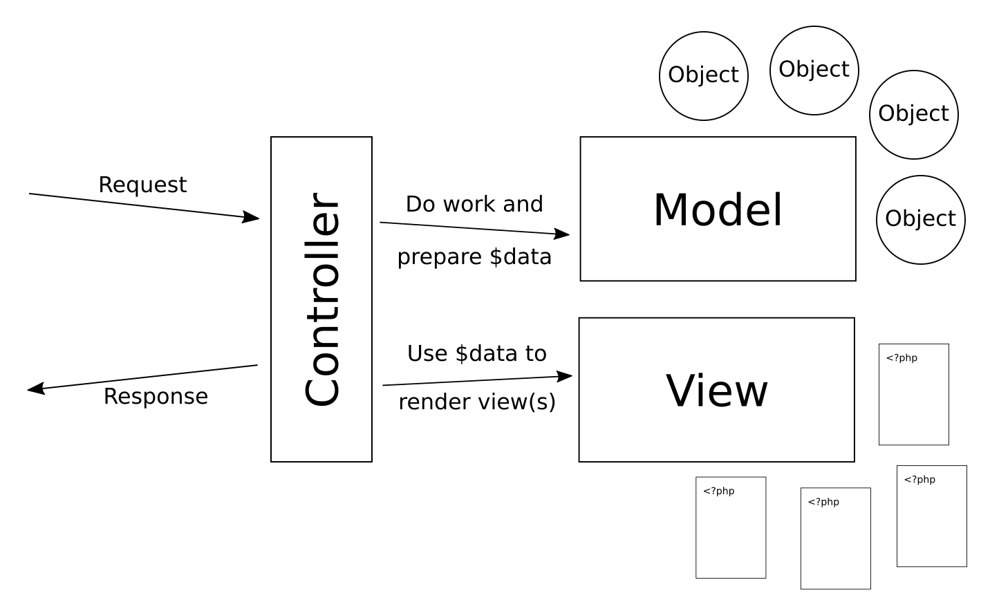
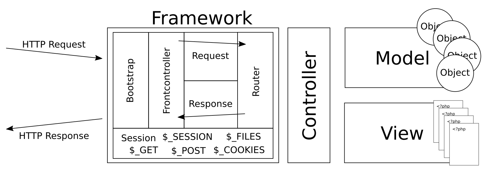
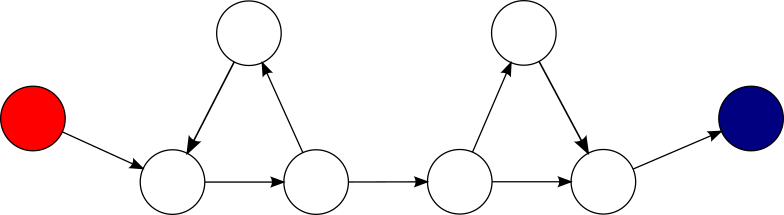

<!doctype html>
<html class="theme-5">
<meta charset="utf-8" />
<link href="../html-slideshow.bundle.min.css" rel="stylesheet" />
<link href="../style.css" rel="stylesheet" />
<script src="https://dbwebb.se/cdn/js/html-slideshow_v1.1.0.bundle.min.js"></script>

<title>Kursen mvc</title>

<script data-role="slide" type="text/html" data-markdown class="titlepage center">
# Object Orientation
## How to think and how to write good code?
### Mikael Roos
</script>


<script data-role="slide" data-markdown type="text/html">
# Agenda

* MVC
* Design pattern
* Object orientation
* OO concepts
* Good practice
* Guidelines to good code

</script>


<script data-role="slide" type="text/html" data-markdown class="titlepage center">
# MVC
## Architectural design pattern
</script>


<script data-role="slide" data-markdown type="text/html">
# Design pattern

* A general, reusable solution to a commonly occurring problem within a given context in software design
* Template for how to solve a problem that can be used in many different situations
* An influential book "Design Patterns: Elements of Reusable Object-Oriented Software" (1994) written by the "Gang of Four (GoF)".

<p class="footnote">https://en.wikipedia.org/wiki/Software_design_pattern<br>https://en.wikipedia.org/wiki/Design_Patterns<br>https://en.wikipedia.org/wiki/Architectural_pattern</p>

</script>


<script data-role="slide" data-markdown type="text/html">
# MVC

* Model, View, Controller
* Model - objects for the application
    * Fat models
* Controller - connect the model with the GUI/framework
    * Thin and skinny controllers
* View - present the results to the GUI/user
    * Dumb views
    * The view should not talk to models or controllers

<p class="footnote">https://en.wikipedia.org/wiki/Model%E2%80%93view%E2%80%93controller</p>

</script>


<script data-role="slide" type="text/html" data-markdown class="center">
# MVC pattern

<figure>

<figcaption>A representation of the MVC architectural pattern.</figcaption>
</figure>

</script>


<script data-role="slide" type="text/html" data-markdown class="center">
# Web framework and MVC

<figure>

<figcaption>The framework integrates with MVC pattern.</figcaption>
</figure>

</script>


<script data-role="slide" data-markdown type="text/html">
# The parts

* The framework dealing with the frontcontroller, request, response and routing
* The framework supports:
    * Controller (glue to the app)
    * View (template engine)
* Model classes is "the rest" of the application

<p class="footnote">More design patterns: https://en.wikipedia.org/wiki/Front_controller</p>

</script>


<script data-role="slide" data-markdown type="text/html">
# Controller

* A class (or callable) with methods
* Get the request, process it
    * do stuff with the model layer,
    * prepare $data,
    * render views (template files),
    * return response
* The glue between the framework and the application
    * No (limited) application code
* Thin and skinny controllers

</script>


<script data-role="slide" data-markdown type="text/html">
# Model

* Model - objects for the application
    * Fat models
* Also known as:
    * Model classes
    * The application domain layer
    * The model layer
    * The business layer

</script>


<script data-role="slide" data-markdown type="text/html">
# Views

* View - present the results to the GUI and user
* Also known as "template files rendering data onto a layout"
* Dumb views
* The view should not talk to models or controllers
    * Is this a rule or a recommendation?
* Use PHP as a template engine or a full blown engine like Twig?
    * Twig compiles down to PHP code

</script>


<script data-role="slide" data-markdown type="text/html">
# Why MVC?

* A reusable solution to a common problem
    * Integrate an application with a framework and a user interface
* Division of competences
* Division of labour
* Separation of concerns

</script>


<script data-role="slide" data-markdown type="text/html">
# Separation of concerns

* Separation of concerns (SoC)
* A design principle for separating a computer program into distinct sections
* Each section addresses a separate concern
* A program that embodies SoC is called a modular program
* SoC can be achieved by encapsulation

<p class="footnote">https://en.wikipedia.org/wiki/Separation_of_concerns</p>

</script>


<script data-role="slide" data-markdown type="text/html">
# Encapsulation

* Layered designs
    * presentation layer, business logic layer
    * data access layer, persistence layer
* Encapsulate data inside a section of code having a well-defined interface
* Bundling of data with the methods that operate on that data
* Restricting of direct access to some of an object's components

<p class="footnote">https://en.wikipedia.org/wiki/Encapsulation_(computer_programming)</p>

</script>


<script data-role="slide" data-markdown type="text/html">
# Information hiding

* Encapsulation is a means of information hiding
* The ability to prevent certain aspects of a class or component from being accessible to its clients
* Provide a stable interface
    * Least likely to change
* Protect the implementation details
    * More likely to change
* When a design decision changes, keep the interface and modify the implementation and the application is not affected

<p class="footnote">https://en.wikipedia.org/wiki/Information_hiding</p>

</script>


<script data-role="slide" type="text/html" data-markdown class="titlepage center">
# Object orientation
## Some details
</script>


<script data-role="slide" data-markdown type="text/html">
# Basics

* Class is a template for creating objects
* An object is instantiated from a class
* There exists OO languages without supporting classes
* Object and Object orientation is a broud term in software development

</script>


<script data-role="slide" data-markdown type="text/html">
# What is OO?

* Separation of concerns
    * Put a section of code into a class/object
* Encapsulation
    * Bundle data with methods operating on data
    * Bundle methods, data and state
* Information hiding
    * Protect the implementation
    * Protect data and methods
    * Provide a stable interface (API)

</script>


<script data-role="slide" data-markdown type="text/html">
# Data, state, methods

* Methods operate on the object data
* The object data is implemented by the member variables, also know as properties
* Methods can update the data, thus changing the object state
* Object state is the current value of its data, the properties
* A challenge is to represent the state with good data structures

> "Decide your data structure and the rest will follow"

<p class="footnote">"Have the argument clear in your mind, the words will follow naturally" https://en.wikipedia.org/wiki/Cato_the_Elder</p>

</script>


<script data-role="slide" type="text/html" data-markdown class="titlepage center">
# Good and Clean code
## SOLID guidelines
</script>


<script data-role="slide" data-markdown type="text/html">
# Single responsibility

* Each class/module should have a single responsibility
* Do just one thing and do it good
* When describing the class, it should be possible in one sentence without using "AND"

> "A class should have only one reason to change"

<p class="footnote">https://en.wikipedia.org/wiki/Single-responsibility_principle</p>

</script>


<script data-role="slide" data-markdown type="text/html">
# Open–closed principle

> "Software entities (classes, modules, functions, etc.) should be open for extension, but closed for modification"

* A class can be extended or specialized by inheritance
* The core of the parent class is not modified
    * Encapsulation
    * Information hiding

<p class="footnote">https://en.wikipedia.org/wiki/Open%E2%80%93closed_principle</p>

</script>


<script data-role="slide" data-markdown type="text/html">
# Liskov substitution principle

* A principle in object-oriented programming stating that an object (such as a class) and a sub-object (such as a class that extends the first class) must be interchangeable without breaking the program

* Using a Dice object as a parameter in a method, send in a DiceGraphic object and it shall still work

<p class="footnote">https://en.wikipedia.org/wiki/Liskov_substitution_principle</p>

</script>


<script data-role="slide" data-markdown type="text/html">
# Interface segregation principle

* No code should be forced to depend on methods it does not use
* Split large interfaces into smaller and more specific ones
* Such shrunken interfaces are also called role interfaces

* A class can implement several interfaces, each interface giving the class a role or "feature"

<p class="footnote">https://en.wikipedia.org/wiki/Interface_segregation_principle</p>

</script>


<script data-role="slide" data-markdown type="text/html">
# Dependency inversion principle

* The principle is a specific methodology for loosely coupling software modules

* High-level modules should not import anything from low-level modules
* Depend on abstractions (interfaces)

* A DiceHand can be injected with the Dice object (loose coupling)
* A DiceHand should not create the Dice object itself (hard coupling)

<p class="footnote">https://en.wikipedia.org/wiki/Dependency_inversion_principle<br>https://en.wikipedia.org/wiki/Dependency_injection</p>

</script>


<script data-role="slide" data-markdown type="text/html">
# SOLID

* Five design principles intended to make software designs more understandable, flexible, and maintainable
* [S]ingle responsibility
* [O]pen–closed principle
* [L]iskov substitution principle
* [I]nterface segregation principle
* [D]ependency inversion principle

<p class="footnote">https://en.wikipedia.org/wiki/SOLID</p>

</script>


<script data-role="slide" type="text/html" data-markdown class="titlepage center">
# Good and Clean code
## Linters and their advice
</script>


<script data-role="slide" data-markdown type="text/html">
# Static code analysis

* Linters having rules on what is perceived as good code
* Warning when your code does not follow a rule
* Find troubles before executing the code
* Make the code more readable and maintainable
* Are the rules really correct and who decides that?

<p class="footnote">https://en.wikipedia.org/wiki/Static_program_analysis</p>

</script>


<script data-role="slide" data-markdown type="text/html">
# Is ELSE good code?

> FormSessionController.php:49  ElseExpression

> The method sessionProcess uses an else expression. Else clauses are basically not necessary and you can simplify the code by not using them.

<p class="footnote">https://phpmd.org/rules/cleancode.html#elseexpression</p>

</script>


<script data-role="slide" data-markdown type="text/html">
# Three C

* To enhance code quality
* Cohesion
* Coupling
* Cyclomatic complexity

</script>


<script data-role="slide" data-markdown type="text/html">
# Cohesion

* Degree to which the elements inside a module belong together
* A cohesive class performs one feature while a non-cohesive class performs two or more features.

> "The ideal value of this metric is 1 (high cohesion) meaning a class has only one responsibility (good) and value X means that a class has probably X responsibilities (bad)."

* LCOM (Lack of Cohesive Methods)

<p class="footnote">https://en.wikipedia.org/wiki/Cohesion_(computer_science)</p>

</script>


<script data-role="slide" type="text/html" data-markdown class="center">
# LCOM

<figure>

<figcaption>Dependency graph on the class relationships provides the value for LCOM.</figcaption>
</figure>

<p class="footnote">https://softwareengineering.stackexchange.com/questions/151004/are-there-metrics-for-cohesion-and-coupling</p>

</script>


<script data-role="slide" data-markdown type="text/html">
# Coupling

* Degree of interdependence between software modules; a measure of how closely connected two classes are
* The strength of the relationships between classes

> "Generally, loose coupled classes and components are preferable as the higher your coupling, the higher are the chances that a class breaks or requires adaption because of changes in classes that it depends on."

<p class="footnote">https://en.wikipedia.org/wiki/Coupling_(computer_programming)<br>https://en.wikipedia.org/wiki/Loose_coupling</p>

</script>


<script data-role="slide" type="text/html" data-markdown>
# Low coupling, high cohesion

> "**Low coupling** is often a sign of a well-structured computer system and a good design, and when combined with<br>**high cohesion** it supports the general goals of high readability and maintainability."

</script>


<script data-role="slide" data-markdown type="text/html">
# Cyclomatic complexity

* Cyclomatic complexity is a software metric used to indicate the complexity of a program
* Quantitative measure of the number of linearly independent paths through a program's source code
* If the source code contains no control flow statements (conditionals or decision points), the complexity would be 1

<p class="footnote">https://en.wikipedia.org/wiki/Cyclomatic_complexity</p>

</script>


<script data-role="slide" type="text/html" data-markdown class="center">
# Complexity by graph

<figure>

<figcaption>Cyclomatic complexity is computed using the control flow graph of the program: the nodes of the graph correspond to indivisible groups of commands of a program, and a directed edge connects two nodes if the second command might be executed immediately after the first command. CC=3</figcaption>
</figure>

</script>


<script data-role="slide" type="text/html" data-markdown class="center">
# CC = 1

```
1   function example() {
        fiddle();
        fiddle();
        fiddle();
        return true;
    }
```

<p class="footnote">No decision points. Cyclomatic complexity = 1.</p>

</script>


<script data-role="slide" type="text/html" data-markdown class="center">
# CC = 6

```
1   function example() {
2       if ($a == $b) {
3           if ($a1 == $b1) {
                fiddle();
4           } elseif ($a2 == $b2) {
                fiddle();
            } else {
                fiddle();
            }
5       } elseif ($c == $d) {
6           while ($c == $d) {
                fiddle();
            }
        } else {
```

<p class="footnote">6 decision points. Cyclomatic complexity = 1+5.</p>

</script>


<script data-role="slide" data-markdown type="text/html">
# CC guideline

> "Cyclomatic Complexity of a method should not exceed 10."

> "Split into smaller method whenever the cyclomatic complexity of the module exceeded 10."

> "For each method, either limit cyclomatic complexity to [the agreed-upon limit] or provide a written explanation of why the limit was exceeded."

* High CC makes code harder to test

</script>


<script data-role="slide" data-markdown type="text/html">
# Summary

* MVC
* Architectural design pattern
* Thin and skinny controllers
* Fat models
* Separation of concerns (SoC)
* Encapsulation
* Information hiding
* Data, state, methods

</script>


<script data-role="slide" data-markdown type="text/html">
# Summary...

* SOLID principles
* Cohesion
* Coupling
* Cyclomatic complexity
* Good and clean code

</script>


<script data-role="slide" data-markdown type="text/html">
# Good code?

> "Good and clean code should be readable and easy to maintain."

<p class="footnote">Lets stay with that definition for the time beeing, until we learn more on the topic of good and clean code.</p>

</script>


<script data-role="slide" data-markdown type="text/html" class="titlepage center">
# The End
</script>


<script data-role="slide" data-markdown type="text/html">
<!-- empty slide by intention -->
</script>


<!--

<script data-role="slide" data-markdown type="text/html">
# Development environment

* Composer
* Codestyle
* Linting and mess detection
* Test your code
* Build documentation

</script>


<script data-role="slide" data-markdown type="text/html">
# Testable code

Testbar kod
    * Returnera saker
    * Ändra inte state?
    * Gör bara en sak.
    * Skriv inte ut saker.

</script>


<script data-role="slide" data-markdown type="text/html">
# PHP-FIG and PSR

* PSR-7 HTTP Message Interface
    * An HTTP message is either a request from a client to a server or a response from a server to a client

* PSR-15 HTTP Handlers
    * A request handler is an individual component that processes a request and produces a response, as defined by PSR-7

* PSR-17 HTTP Factories
    * An HTTP factory is a method by which a new HTTP object, as defined by PSR-7, is created

</script>


<script data-role="slide" data-markdown type="text/html">
# PHP-FIG pros and cons

* Do we need a standardisation of module interfaces?
* What does the framework owners think of this?
* https://www.reddit.com/search/?q=PHP-FIG

</script>


<script data-role="slide" data-markdown type="text/html">
# 10 steg till bra kod

Use composer
Follow best practice directory structure
Learn from PHP-FIG

?

</script>


<script data-role="slide" data-markdown type="text/html">
# Define good code?

One definition is...

> ...

What is your definition?

</script>

-->
